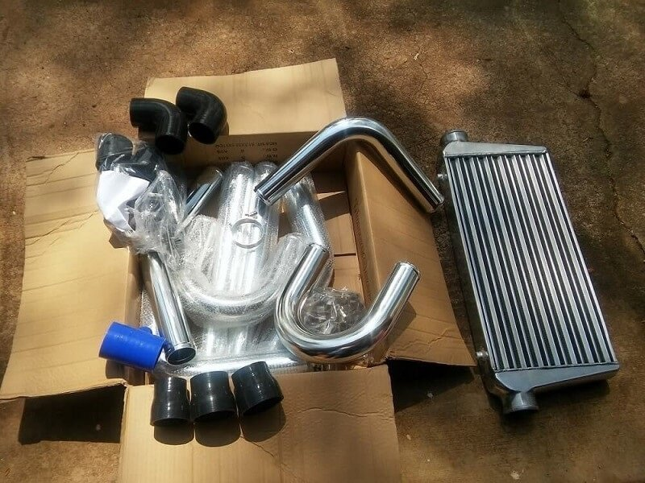

Intercooler Install
INTRO
REMOVAL
PIPES
MAP DIY
RESULT
INTRO:I created this DIY to aid you with your intercooler install and show some tricks that might help along the way. I've seen a few related DIY's which are usually not completed to a level of safety, reliability and performance that can make a universal intercooler system seem daunting. Be in the mindset of taking your time, doing it right and choosing the right parts without cutting corners. I started by searching around for an intercooler kit that would offer good flow and cooling at an affordable cost, only to be left without any option under $500. The CX Racing kit looked like a decent contender, but I opted for a custom DIY project using an affordable universal intercooler and piping kit. I choose an intercooler from Amazon for $65 with specs: 28" X 7" x 2.5" with 2.5" inlet/outlet. I was fairly skeptical going with something so cheap, but I thought I'd be a guinea pig and hopefully come out with some entertaining results.
The next step was to get a universal piping kit with the right bends. Again, I opted for a kit from Amazon for $100. it came with (16) T bolt clamps and some strait and 90 deg couplers. After fitting the intercooler I decided to order (3) 45 degree couplers, a coupler with a 1" outlet for the diverter valve to mate to and a 2"-2.5" reducer coupler to fit the piping to the turbo. One of my biggest reasons for not getting a pre fabricated piping kit for the B6 was that they all seemed to have 2" piping and I didn't want to sacrafice for anything under 2.5" diameter. The picture on the left is of the piping kit and the first intercooler I bought which ended up being WAY to large for my stock bumper.